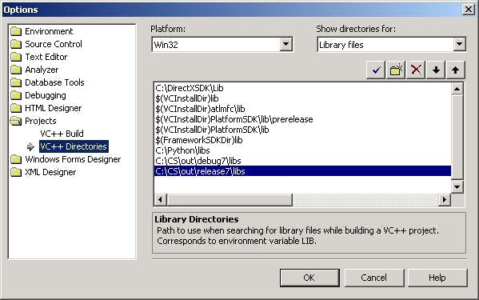
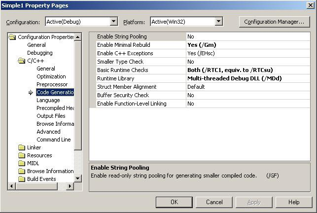

| [ < ] | [ > ] | [ << ] | [ Up ] | [ >> ] | [Top] | [Contents] | [Index] | [ ? ] |
Written by Philip Wyett philipwyett@dsl.pipex.com. Last updated 2 June 2003.
This HOWTO is a step by step guide for creating a basic Crystal Space application with MSVC 7 .NET outside the Crystal Space source tree.
IMPORTANT: This tutorial assumes you have a basic familiarity with MSVC and it's inner workings. This tutorial also assumes you have a fully compiled (both release and debug) version of Crystal Space somewhere on your computer.
Start MSVC 7 and from the File menu click on File then New and once the sub menu of New opens, click on Project. You will now be presented with a dialog box (see image below) for creating a new project.
Firstly we need to select the type of project we wish to create. Crystal Space applications are Win32 applications and primarily work from a console base. This still allows the creation of Graphical User Interface (GUI) applications. However, it also allows you to use the -console command line switch and access more verbose runtime data normally only available with debug builds. If you do wish to create standard win32 applications, you may do so. However... the -console switch will not operate correctly in that type of application.
In the Project Types: window select Visual C++ projects. Next we move to the Templates: window and choose the application type we wish to create. As mentioned above Crystal Space applications are Win32 applications. So, search that window and select Win32 Project. Now enter the name of your application in the Name text box. In our example, the application will be named `simple1'. Once done, click on the OK button.
You will now be presented with another dialog box (see image below).
We wish to specify some application settings. So, click on hyperlink text Application Settings below Overview and you will be presented with what can be seen in the screenshot below.
As discussed above, Crystal Space applications are primarily console based (though GUI are allowed) inorder to give us acces to the verbose diagnostic text via -console. Under Application type:, select Console application. We are starting from a blank canvas. So, in the Additional options: section, check the box Empty project. Once done, click on the Finish button.
You should now be in the MSVC 7 IDE (Intergrated Development Environment), with the simple1 project loaded. Lets move on...
Rather than create code for this tutorial and keeping inline with time honored tradition - We are now going to cheat and use existing Crystal Space code. :-)
Firstly copy and paste the `simple1.cpp' and `simple1.h' from the Crystal Space code tree, into the newly created `simple1' project directory. These files can be found here:
`CS\apps\tutorial\simple1\'
Once done, return to the MSVC IDE and select the Solution Explorer tab within the Solution Explorer window. See the image below to see the Solution Explorer window from within the MSVC IDE.
To add file(s) to a project, select the appropriate folder in the Solution Explorer window, be that Source Files or Header Files etc. Right click on it to bring up the context menu and then hover over Add until the sub menu appears and then click on Add Existing Item.... You will now be presented with the Add Existing Item dialog box, which can be seen in the image below.
After selecting the desired file(s) you wish to add, click on the Open button to finalize your choice(s) and be returned back to the MSVC IDE. Repeat this process twice adding `simple1.cpp' to the Source Files folder and `simple1.h' to the Header Files folder. Once done you should have a Solution Explorer window which looks like the image below.
First thing we need todo is point MSVC to both Crystal Spaces `include' and both the release and debug build `libs' directories, so it may access them at compile/link time. Select Tools from the File menu and then Options... You will now be presented with the Options dialog box, which can be seen below.
Click Projects folder of the Options dialog. Now click on VC++ Directories.
Lets first add the path to the location of the Crystal Space `include' directory. Select Include files in the Show directories for drop down menu. Next click on the New Line button (folder beneath the drop down menu). Click the browse button (button with three dots) on the right hand side, enabling you to select the Crystal Space include directory - wherever it is on your system. See the image below for an example of it set.
To set the paths to the Crystal Space lib files, you must remember you need to add two--one pointing to the location where the release libs are and another to where the debug libs are located. In the Show directories for drop down menu, now select Library files. Follow the same browse and selection procedure as you used when adding the `include' path, adding the following paths - adjusting for where you have Crystal Space located on your system.
`CS\out\release\libs\'
`CS\out\debug\libs\'
See image below for an example of these set.

Once done, click on the OK button and return to the MSVC IDE.
Crystal Space essentially has three preprocessor definitions which MUST be set in-order to successfully compile and link your application. They are `CS_WIN32_CSCONFIG', which is added whether the build is release or debug. `__CRYSTAL_SPACE__', which is also set whether the build is release or debug. And finally `CS_RELEASE' or `CS_DEBUG', which is added as you may guess `CS_RELEASE' in the settings for release builds and `CS_DEBUG' in the settings for debug builds.
To set the preprocessor definitions for your project. Select your project in the Workspace window. See area highlighted in blue in the image below. Now, from the Project menu select Properties. Alternatively, you can right click on the highlighted area in the Workspace and then click on Properties - both ways work.
Once you have clicked on Properties. You will then be presented with the Properties dialog box, which can be seen in the image below.
Open the C/C++ folder and select Preprocessor. Insert the appropriate definitions in the Preprocessor Definitions text box i.e. for a debug build `CS_WIN32_CSCONFIG', `__CRYSTAL_SPACE__' and `CS_DEBUG', making sure to separate with semi-colons. Alternatively, you can click the elipsis (...) button to pull up an easier view. An example of the ones entered for a debug build can be seen in the image below.
Open the C/C++ folder and select Preprocessor. Insert the appropriate definitions in the Preprocessor Definitions text box i.e. for a release build `CS_WIN32_CSCONFIG', `__CRYSTAL_SPACE__' and `CS_RELEASE', making sure to separate with semi-colons. Alternatively, you can click the elipsis (...) button to pull up an easier view. An example the ones entered for a release build can be seen in the image below.
Once done, click on the OK button and return to the MSVC IDE.
As in step 4 we need to change one or more project settings. Select your project in the Workspace window. See area highlighted in blue in the image below. Now, from the Project menu select Properties. Alternatively, you can right click on the highlighted area in the Workspace and then click on Properties - both ways work.
Once you have clicked on Properties, you will be presented with the Properties dialog box once again.
Open the C/C++ folder and select Code Generation. Crystal Space uses the Multithreaded DLL run-time internally, so to avoid conflict and errors applications should use the same.
For debug builds you need to select Debug Multithreaded DLL from the Runtime Library drop down menu. As can be seen in the image below.

For release builds you need to select Multithreaded DLL from the Runtime Library drop down menu. As can be seen in the image below.
Once done, click on the OK button and return to the MSVC IDE.
When compiling Crystal Space in release and debug mode, you will end up with the following static libs, some of which you may require at some point in your own applications if you use the functionality contained within a given library.
Crystal Space debug library names (the _d indicates a debug CS library):
libcrystalspace_d.lib libcrystalspace_directx_d.lib libcrystalspace_opengl_d.lib libcrystalspace_windows_d.lib
Crystal Space release library names:
libcrystalspace.lib libcrystalspaceirectx.lib libcrystalspace_opengl.lib libcrystalspace_windows.lib
To add the necessary libraries to link our application. As in step 4 we need to change one or more project settings. Select your project in the Workspace window. See area highlighted in blue in the image below. Now, from the Project menu select Properties. Alternatively, you can right click on the highlighted area in the Workspace and then click on Properties - both ways work.
For applications we need only link with the primary Crystal Space library. The other libraries provide support for custom plugin modules. Open the Linker folder and select Input. In the text box Additional Dependencies add the Crystal Space libraries as named below into the box with those already there.
Debug:
libcrystalspace_d.lib
See image below for example of debug build link settings.
Release:
libcrystalspace.lib
See image below for example of release build link settings.
Finally, click on OK to return to the MSVC IDE and then build the project.
----------Configuration: simple1 - Win32 Release---------- Compiling... simple1.cpp C:\CS\INCLUDE\csplatform.h(26) : fatal error C1083: Cannot open include file: 'csconfig.h': No such file or directory Error executing cl.exe. simple1.exe - 1 error(s), 0 warning(s) |
A. Repeat Step 4 - You seem to have not set one or more of the preprocessor definitions correctly.
----------Configuration: simple1 - Win32 Release----------
Compiling...
simple1.cpp
Linking...
simple1.obj : error LNK2001: unresolved external symbol
"public: void __thiscall csReversibleTransform::RotateThis(
class csVector3 const &,float)"
simple1.obj : error LNK2001: unresolved external symbol
"public: static struct iSCF * iSCF::SCF"
simple1.obj : error LNK2001: unresolved external symbol
"public: __thiscall csView::csView(
struct iEngine *,struct iGraphics3D *)"
simple1.obj : error LNK2001: unresolved external symbol
"public: static bool __cdecl csInitializer::OpenApplication(
struct iObjectRegistry *)"
simple1.obj : error LNK2001: unresolved external symbol
"public: static void __cdecl csCommandLineHelper::Help(
struct iObjectRegistry *,struct iCommandLineParser *)"
simple1.obj : error LNK2001: unresolved external symbol
"public: static bool __cdecl csCommandLineHelper::CheckHelp(
struct iObjectRegistry *,struct iCommandLineParser *)"
simple1.obj : error LNK2001: unresolved external symbol
"public: static bool __cdecl csInitializer::SetupEventHandler(
struct iObjectRegistry *,
bool (__cdecl*)(struct iEvent &),unsigned int)"
simple1.obj : error LNK2001: unresolved external symbol
"public: static bool __cdecl csInitializer::RequestPlugins(
struct iObjectRegistry *,...)"
simple1.obj : error LNK2001: unresolved external symbol
"bool __cdecl csDefaultRunLoop(struct iObjectRegistry *)"
simple1.obj : error LNK2001: unresolved external symbol
"public: static void __cdecl csInitializer::DestroyApplication(
struct iObjectRegistry *)"
simple1.obj : error LNK2001: unresolved external symbol
"public: static struct iObjectRegistry * __cdec
csInitializer::CreateEnvironment(
int,char const * const * const)"
simple1.obj : error LNK2001: unresolved external symbol
"int __cdecl csPrintf(char const *,...)"
simple1.obj : error LNK2001: unresolved external symbol
"int __cdecl csPrintfV(char const *,char *)"
MSVCRT.lib(crtexe.obj) : error LNK2001:
unresolved external symbol _main
Release/simple1.exe : fatal error LNK1120: 14 unresolved externals
Error executing link.exe.
simple1.exe - 15 error(s), 0 warning(s)
|
A. This would indicate that you have forgotten to add the Crystal Space static libraries to link with. Work through Step 6 again and re-check the settings you have entered.
----------Configuration: simple1 - Win32 Release---------- Compiling... simple1.cpp Linking... MSVCRT.lib(MSVCRT.dll) : error LNK2005: _strchr already defined in LIBC.lib(strchr.obj) MSVCRT.lib(MSVCRT.dll) : error LNK2005: _strstr already defined in LIBC.lib(strstr.obj) MSVCRT.lib(MSVCRT.dll) : error LNK2005: _tolower already defined in LIBC.lib(tolower.obj) MSVCRT.lib(MSVCRT.dll) : error LNK2005: _strncpy already defined in LIBC.lib(strncpy.obj) MSVCRT.lib(MSVCRT.dll) : error LNK2005: _free already defined in LIBC.lib(free.obj) MSVCRT.lib(MSVCRT.dll) : error LNK2005: _memmove already defined in LIBC.lib(memmove.obj) MSVCRT.lib(MSVCRT.dll) : error LNK2005: _realloc already defined in LIBC.lib(realloc.obj) MSVCRT.lib(MSVCRT.dll) : error LNK2005: _malloc already defined in LIBC.lib(malloc.obj) MSVCRT.lib(MSVCRT.dll) : error LNK2005: _strncmp already defined in LIBC.lib(strncmp.obj) LINK : warning LNK4098: defaultlib "MSVCRT" conflicts with use of other libs; use /NODEFAULTLIB:library Release/simple1.exe : fatal error LNK1169: one or more multiply defined symbols found Error executing link.exe. simple1.exe - 10 error(s), 1 warning(s) |
A. This or similar LNK2005 errors, tend to indicate that you have forgotten to set the correct run-time library in the project settings. Work through Step 5 again and make sure you have your project set to Debug Multithreaded DLL or Multithreaded DLL for debug and release builds respectively.
| [ < ] | [ > ] | [ << ] | [ Up ] | [ >> ] |
This document was generated using texi2html 1.76.